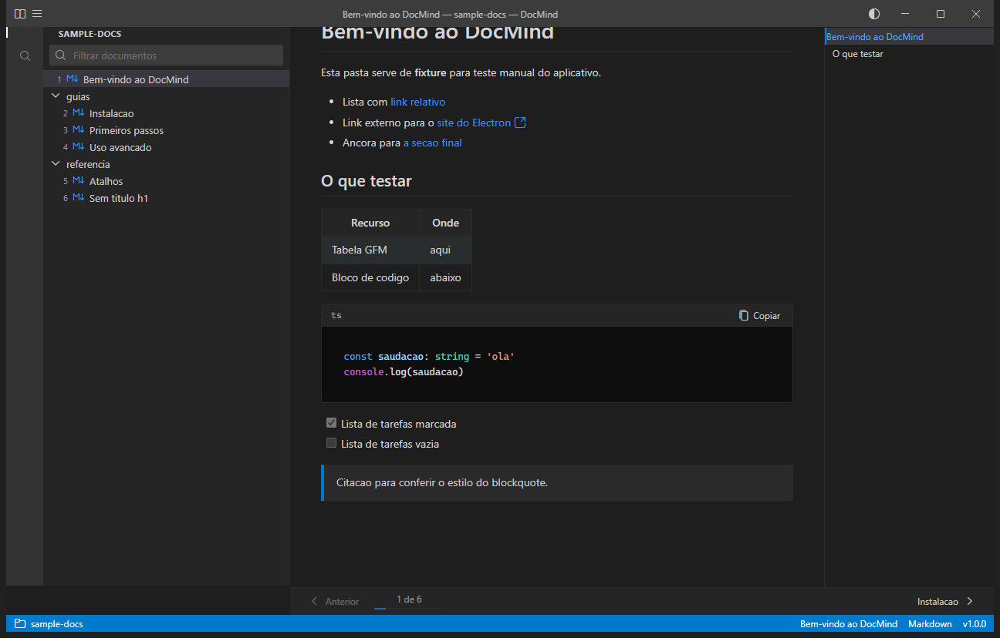

Leitor desktop de documentação Markdown com a ergonomia do VS Code.
Abra uma pasta inteira de arquivos Markdown e leia em uma sequência ordenada determinística. Sem risco de edição acidental de arquivos, com outline em tempo real e visual confortável para leitura técnica prolongada.

Por que não usar apenas o editor de código?
Editores de código foram construídos para escrever e debugar, não para ler documentação estruturada. O DocMind preenche essa lacuna com foco estrito em consumo de conteúdo.
| Aspecto | Editor de Código Comum | DocMind |
|---|---|---|
| Integridade dos arquivos | Edição acidental facilitada por atalhos e cliques no teclado. | 100% somente leitura. Nenhum arquivo no disco pode ser alterado. |
| Ordem de leitura | Árvore de arquivos solta; usuário precisa adivinhar o próximo arquivo. | Sequência determinística contínua com Anterior/Próximo (Alt + Seta). |
| Sumário do documento | Requer extensões de terceiros ou painéis secundários. | Outline nativo e automático gerado a partir dos cabeçalhos. |
| Sincronização externa | Conflitos de arquivo aberto caso seja alterado por outro processo. | Atualização instantânea via observador do sistema de arquivos (Chokidar). |
| Ambiente visual | Poluição visual com abas de código, terminais, linters e warnings. | Interface limpa dedicada inteiramente ao texto e diagramas. |
Recursos pensados para leitura técnica
Decisões de engenharia para quem precisa estudar, consultar e navegar por especificações sem atrito.
Sequência determinística e navegação linear
Ao abrir um repositório ou pasta com múltiplos arquivos .md, o DocMind monta uma fila sequencial estável de leitura. Você pode percorrer a documentação inteira como os capítulos de um livro, usando teclas rápidas de paginação.
02. arquitetura.md
03. configuracao.md
04. api-referencia.md
05. faq.md
Segurança completa e renderização sanitizada
O motor de renderização adota rehype-sanitize e remark-gfm para processar tabelas, listas de tarefas, blocos de código com destaque de sintaxe e notas técnicas, bloqueando injeções de script indesejadas.
Outline dinâmico e observação em tempo real
O sumário (TOC) é gerado diretamente a partir dos cabeçalhos do documento atual, permitindo saltos rápidos entre seções. Se os arquivos forem modificados em seu editor externo, a visualização atualiza automaticamente via Chokidar.
§ Instalação e uso
§ Atalhos de teclado
§ Suporte a imagens locais
Atalhos de teclado
Operação completa sem a necessidade de tocar no mouse.
Downloads oficiais (v1.0.0)
Escolha o formato adequado para o seu fluxo de trabalho no Windows.
Instalador Windows (.exe)
Instalação assistida no sistema com atalhos no Menu Iniciar e Desktop.
- Instalação padrão no diretório de programas
- Desinstalador limpo incluso
- Compatível com Windows 10 e 11 (64-bit)
Executável Portável (.zip)
Sem instalação. Descompacte em qualquer pasta ou pendrive e execute diretamente.
- Não requer privilégios de administrador
- Não altera chaves do Registro do Windows
- Ideal para ambientes corporativos restritos
Perguntas frequentes
Não. O DocMind é estritamente somente leitura (read-only). Ele abre sua pasta com permissões apenas de consulta para ler o conteúdo e renderizá-lo na tela. Nenhum arquivo de texto ou imagem é modificado ou sobrescrito.
São reconhecidos arquivos com extensões .md e .markdown, além de imagens locais referenciadas nos documentos (PNG, JPG, SVG, WebP e GIF).
Sim. O DocMind integra o observador de arquivos chokidar. Quando você salva uma alteração no seu editor habitual, o preview do DocMind recarrega o conteúdo imediatamente.
Sim. O DocMind é distribuído sob a licença MIT. O código-fonte está disponível integralmente no repositório do GitHub.